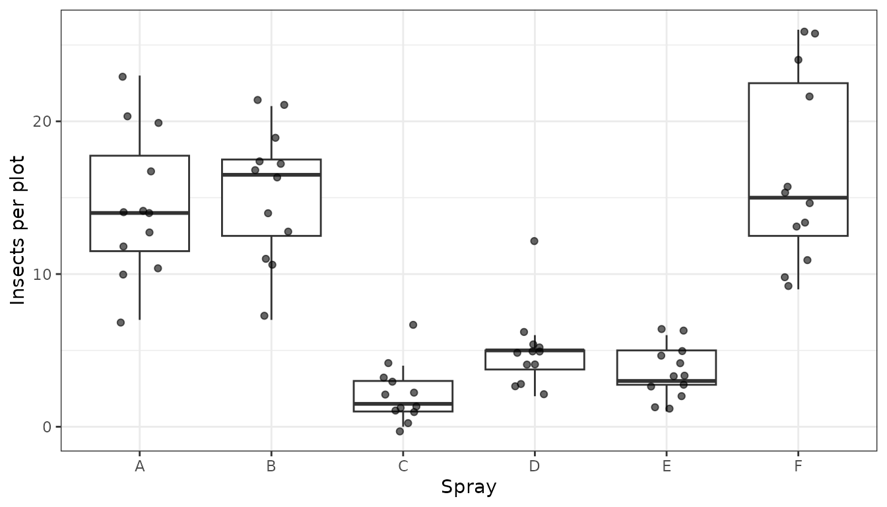

The study. Insects were counted on agricultural
plots treated with one of six sprays, twelve plots per spray
(InsectSprays; Beall 1942). The question:
do the sprays differ in how many insects survive?
1. Look at the data
library(ggplot2)
ggplot(InsectSprays, aes(spray, count)) +
geom_boxplot(outlier.shape = NA) +
geom_jitter(width = 0.15, alpha = 0.6) +
labs(x = "Spray", y = "Insects per plot") +
theme_bw()
The sprays with few insects also have little spread: the variance grows with the mean, as it does for counts.
2. Ask which test
tidyvisor(InsectSprays, response = "count", group = "spray")
#> Registered S3 method overwritten by 'parsnip':
#> method from
#> print.nullmodel vegan
#>
#> ── tidyvisor: which analysis? ──────────────────────────────────────────────────
#> Question: compare
#>
#> ── What the data show ──
#>
#> • Groups: 6 — A (n = 12), B (n = 12), C (n = 12), D (n = 12), E (n = 12), F (n
#> = 12)
#> • Normality (Shapiro-Wilk p, per group): A 0.75; B 0.64; C 0.048; D 0.0027; E
#> 0.3; F 0.1 — at least one group departs from normality
#> • Skewness: A 0.27; B -0.35; C 1.13; D 1.68; E 0.05; F 0.39 — right-skewed
#> (long tail of large values)
#> • Outliers (robust z > 3.5): 0
#> • Spread (largest SD / smallest SD): 3.59 (Fligner-Killeen p = 0.013) — unequal
#> spreads: Student's t and the classical ANOVA are unreliable, especially with
#> unequal group sizes
#> • Counts: non-negative whole numbers — counts have a variance that grows with
#> the mean; a GLM for counts models that directly
#> • All values positive: no
#>
#> ── Recommended ──
#>
#> Before testing: Plot the data
#> Box plots with the points show skewness, outliers and unequal spread at a
#> glance; the checks above put numbers on them.
#> boxplot(count ~ spray, data = data); stripchart(count ~ spray, data = data, vertical = TRUE, add = TRUE, method = "jitter")
#> Test: GLM for counts: negative binomial
#> The response is counts whose spread differs between groups. A count GLM models
#> that directly and gives each group difference as a ratio of means; transforming
#> counts (log(y + 1)) biases the estimates (O'Hara and Kotze 2010). The variance
#> is up to 2.3 times the mean, so the negative binomial.
#> m <- MASS::glm.nb(count ~ spray, data = data)
#> anova(m, test = "Chisq"); tidyvisor(m)
#> Alternative: Non-parametric: rank test
#> Makes no assumption about the shape of the distributions; answers whether
#> values in one group tend to be larger.
#> kruskal.test(count ~ spray, data = data)
#> pairwise.wilcox.test(data$count, data$spray, p.adjust.method = "holm")
#> Alternative: Robust: trimmed means
#> Resists outliers and heavy tails while still comparing a centre.
#> WRS2::t1way(count ~ spray, data = data) # 20% trimmed means
#> Interpret: Plain-language explanation of the result
#> What was tested, the effect with its interval, and what to do next.
#> tidyvisor(result)The checks confirm what the plot shows: skewed groups, a more than threefold difference in spread, and counts. A one-way ANOVA would be unreliable; tidyvisor recommends a count model, with a rank test and a robust test as alternatives.
3. What an ANOVA would have said
a <- lm(count ~ spray, data = InsectSprays)
tidyvisor(a)$sections[c("Diagnostics", "What to do next")]
#> $Diagnostics
#> [1] "Normality of residuals (Shapiro-Wilk): W = 0.960, p = 0.022; the residuals depart from normality: look at the Q-Q plot, and consider a transformation or another family."
#> [2] "Constant variance (Breusch-Pagan): chi-squared = 20.70 on 5 df, p < 0.001; the spread of the residuals changes with the fitted values: consider a log or Gamma model, or robust standard errors."
#> [3] "Influence: no observation dominates the fit (largest Cook's distance 0.09, row 69; values above 1 would be a concern)."
#>
#> $`What to do next`
#> [1] "count is counts: fit a Poisson or negative binomial GLM instead of a linear model (glm(..., family = poisson) or MASS::glm.nb()); it models the variance growing with the mean. Avoid log(y + 1), which biases the estimates (O'Hara and Kotze 2010)."
#> [2] "After any change, check the residuals again with plot() and tidyvisor()."4. The count model
nb <- MASS::glm.nb(count ~ spray, data = InsectSprays)
tidyvisor(nb)
#>
#> ── tidyvisor: what the results show ────────────────────────────────────────────
#>
#> ── Overview ──
#>
#> • Generalised linear model of count on 72 observations (Negative
#> Binomial(28.0995) family, log link).
#>
#> ── Fit ──
#>
#> • The predictors explain 76.3% of the deviance (the GLM analogue of R-squared).
#> • Against a model with no predictors: F = 42.06 on 5 and 66 df, p < 0.001.
#>
#> ── Effects ──
#>
#> • sprayB: spray = B (compared with spray = A) multiplies the expected count by
#> 1.06 (+6%; 95% CI 0.814 to 1.37), p = 0.669.
#> • sprayC: spray = C (compared with spray = A) multiplies the expected count by
#> 0.144 (-86%; 95% CI 0.0913 to 0.226), p < 0.001.
#> • sprayD: spray = D (compared with spray = A) multiplies the expected count by
#> 0.339 (-66%; 95% CI 0.242 to 0.475), p < 0.001.
#> • sprayE: spray = E (compared with spray = A) multiplies the expected count by
#> 0.241 (-76%; 95% CI 0.166 to 0.352), p < 0.001.
#> • sprayF: spray = F (compared with spray = A) multiplies the expected count by
#> 1.15 (+15%; 95% CI 0.888 to 1.49), p = 0.281.
#> • Effects on the log or logit scale are multiplicative: they combine by
#> multiplying, and a factor of 1 means no effect.
#> • Each effect is estimated with the other predictors held fixed.
#>
#> ── Diagnostics ──
#>
#> • Influence: no observation dominates the fit (largest Cook's distance 0.18,
#> row 27; values above 1 would be a concern).
#>
#> ── After the overall test ──
#>
#> • spray (6 levels) has an overall effect (p < 0.001): the levels are not all
#> alike. Go on to post hoc comparisons of every pair, adjusted for the number
#> of comparisons; the coefficients above only compare each level with the
#> reference level A.
#> • emmeans::emmeans(m, pairwise ~ spray, type = "response") # Tukey-adjusted
#> pairs, with intervals
#> • If only comparisons with a control matter, decide so before looking and use
#> emmeans::emmeans(m, trt.vs.ctrl ~ spray, type = "response") (Dunnett; the
#> first level, A, is the control), which keeps more power.
#>
#> ── For the paper ──
#>
#> • Results (strongest evidence first; each factor level is compared with the
#> reference level):
#> • 'count was 0.144 times as high for spray = C as for spray = A (95% CI 0.0913
#> to 0.226, p < 0.001).'
#> • 'count was 0.241 times as high for spray = E as for spray = A (95% CI 0.166
#> to 0.352, p < 0.001).'
#> • 'count was 0.339 times as high for spray = D as for spray = A (95% CI 0.242
#> to 0.475, p < 0.001).'
#> • The model is on the log scale, so effects are reported as ratios of means
#> (exponentiated coefficients) with their intervals.
#> • Report every term of the model, not only the significant ones, with the
#> estimate, its 95% CI and the p-value; give n, and the fit (R-squared, or
#> deviance explained, or the random-effect SDs for a mixed model).
#> • Figure: model predictions with their confidence band over the raw data, one
#> panel per focal predictor:
#> • ggeffects::ggpredict(m, terms = "spray") |> plot(show_data = TRUE)
#> • ggplot2::ggsave("figure1.pdf", width = 85, height = 70, units = "mm") # one
#> journal column
#> • Figure style for journals: show the raw data with the estimates, give n per
#> group in the caption, label axes with units, use a colour-blind-safe palette
#> (Okabe-Ito, viridis) and no 3D, pie or dual-axis charts; text at least 8 pt
#> at final size; save as PDF or SVG (vector) at the journal's column width
#> (about 85 mm single, 180 mm double), or 600 dpi for raster images.
#> • Table: one row per term with the estimate, 95% CI and p-value (and the
#> random-effect SDs for a mixed model):
#> • gtsummary::tbl_regression(m, exponentiate = TRUE) # or broom::tidy(m,
#> conf.int = TRUE, exponentiate = TRUE) for your own table
#> • Methods: the model formula, the family and link, how the model was checked,
#> the software and packages with versions (R 4.6.2; citation("stats")), and how
#> the predictors were chosen (before seeing the data, or how).
#>
#> ── Reading the plots ──
#>
#> • plot(model) shows four diagnostics: residuals against fitted values (look for
#> curves or a funnel), the normal Q-Q plot, scale-location (spread against
#> fitted values) and residuals against leverage (influential points).
#> • Plot each effect on the response scale, with its confidence band, rather than
#> the coefficients alone.Each spray’s effect is now a ratio of mean counts relative to spray A, with its confidence interval: the natural way to report a treatment that reduces pests by a fraction.
5. A check with a rank test
tidyvisor(kruskal.test(count ~ spray, data = InsectSprays))
#>
#> ── tidyvisor: what the results show ────────────────────────────────────────────
#>
#> ── Overview ──
#>
#> • Kruskal-Wallis rank sum test on count by spray.
#>
#> ── Result ──
#>
#> • Kruskal-Wallis chi-squared = 54.7 (df = 5), p < 0.001.
#>
#> ── Meaning ──
#>
#> • Values in one group tend to be larger than in another. Rank tests compare
#> whole distributions, not means: report medians or the location shift with its
#> interval, not a difference in means.
#> • A p-value is not the size of an effect: always report the estimate and its
#> interval, and a non-significant result is not evidence of no difference.
#>
#> ── After the overall test ──
#>
#> • The overall test shows that the 6 groups are not all alike; it does not say
#> which differ. Go on to post hoc comparisons of every pair, with p-values
#> adjusted for the number of comparisons.
#> • Rank-based pairs (the follow-up to Kruskal-Wallis):
#> pairwise.wilcox.test(data$count, data$spray, p.adjust.method = "holm"), or a
#> Dunn test (FSA::dunnTest(count ~ spray, data = data, method = "holm")).
#> • Report each pair as a median difference or Hodges-Lehmann shift with its
#> interval (wilcox.test(conf.int = TRUE)), not only adjusted p-values.
#> • Decide which pairs matter before looking: if only comparisons with a control
#> are of interest, test those alone (Dunnett, or Holm on that smaller set);
#> fewer comparisons keep more power.
#>
#> ── What to do next ──
#>
#> • For an effect size, wilcox.test(conf.int = TRUE) gives the Hodges-Lehmann
#> shift with its interval.
#> • If the data are positive and right-skewed, a test on the log scale (or a
#> Gamma GLM) gives a ratio of means, which is often easier to report.
#>
#> ── For the paper ──
#>
#> • Results: 'count differed among levels of spray (Kruskal-Wallis rank sum test;
#> H(5) = 54.7, p < 0.001).'
#> • Report the statistic with its degrees of freedom, the exact p-value (p <
#> 0.001 below that), and the effect size with its interval; never 'p = 0.000'
#> or 'n.s.' alone.
#> • Figure:
#> • ggplot2::ggplot(data, ggplot2::aes(spray, count)) +
#> ggplot2::geom_boxplot(outlier.shape = NA, width = 0.5) +
#> ggplot2::geom_jitter(width = 0.15, alpha = 0.6) +
#> ggplot2::theme_classic(base_size = 9)
#> • ggplot2::ggsave("figure1.pdf", width = 85, height = 70, units = "mm") # one
#> journal column
#> • Figure style for journals: show the raw data with the estimates, give n per
#> group in the caption, label axes with units, use a colour-blind-safe palette
#> (Okabe-Ito, viridis) and no 3D, pie or dual-axis charts; text at least 8 pt
#> at final size; save as PDF or SVG (vector) at the journal's column width
#> (about 85 mm single, 180 mm double), or 600 dpi for raster images.
#> • Table: one row per level of spray with n and the median and interquartile
#> range; the test in a footnote, and any post hoc results as letters or a
#> pairwise table with adjusted p-values.
#> • Methods: name the test (Kruskal-Wallis rank sum test), the software and
#> version (R 4.6.2, citation()), any adjustment for multiple comparisons, and
#> the significance level.Both analyses agree that the sprays differ; the count model also says by how much.
6. Report
Insect counts were compared among the six sprays with a negative binomial generalised linear model (
MASS::glm.nb()), because the counts were overdispersed and their variance increased with the mean, which ruled out a one-way ANOVA. Effects are reported as ratios of mean counts relative to spray A with 95% confidence intervals; a Kruskal-Wallis test gave the same conclusion.